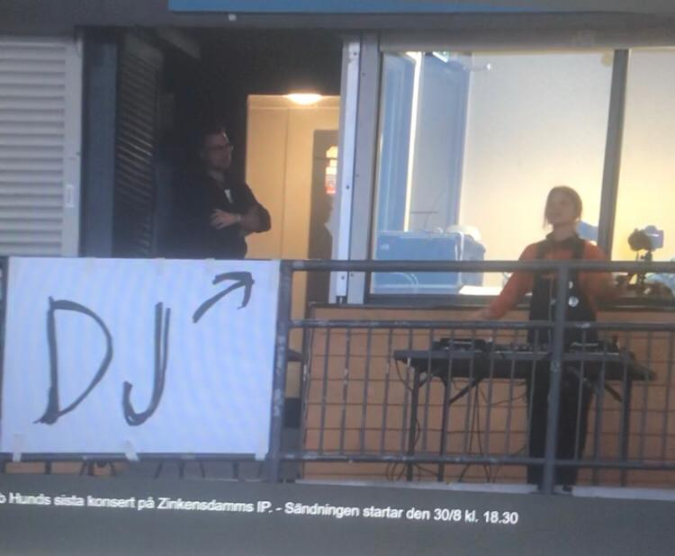

En historisk kväll med bob hunds sista konsert på Zinkensdamm i Stockholm har nu ägt rum. Nedan hittar du setlistan från kvällen. För de låtar som saknar video har platshållare lagts till.

Låtar som spelades innan konserten av DJ (urval):
Gang of Four - Natural's not in it
bob hund - Allseende Ögat
Robert Johnson & Punchdrunks - Box Office Poison
Helga - LOW-RES
Max Elto - Citylights
Silverbullit - Magnetic City
Setlista
20 låtar1 Rök i dina ögon
2 Düsseldorf
3 Tinnitus i hjärtat
4 Hjärtskärande rätt
5 Folkmusik för folk som inte kan bete sig som folk
6 Nu har du gått för långt
7 Ett fall och en lösning
8 Upp, upp, upp, ner
9 Det skulle vara lätt för mig att säga att jag inte hittar hem, men det gör jag; tror jag
10 Mer än så kan ingen bli
11 Nu är det väl revolution på gång?
12 Allt på ett kort
13 Festen är över
14 Blommor på brinnande fartyg
15 Tralala lilla molntuss, kom hit skall du få en puss
16 Harduingetmankandansatill?
17 Den lilla planeten
18 Sista beställningen
19 Jag rear ut min själ
20 Den ensamme sjömannens födelsedag
Om konserten
Detta var bob hunds sista konsert på Zinkensdamm i Stockholm. En historisk kväll som markerade slutet på en legendarisk karriär. Konserten innehöll många favoriter och några överraskningar för de trogna fansen.
Gäster och medverkande
Under kvällen medverkade Popkollo Stockholm, Popkollo Malmö, Esther Lennstrand och Henrik Svensson. Den ensamme sjömannens födelsedag framfördes med hjälp av orkester.